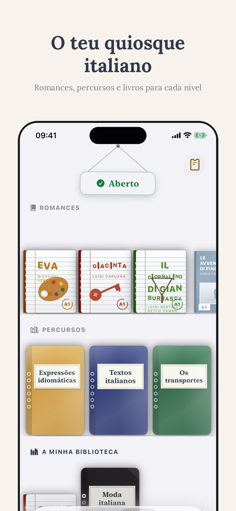
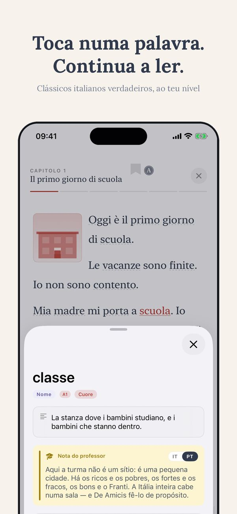
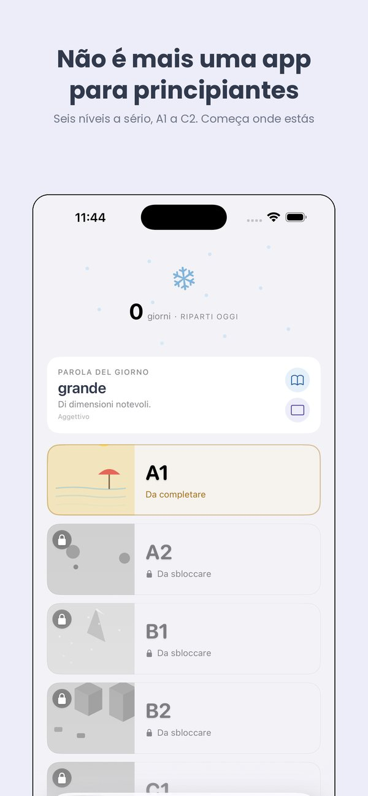
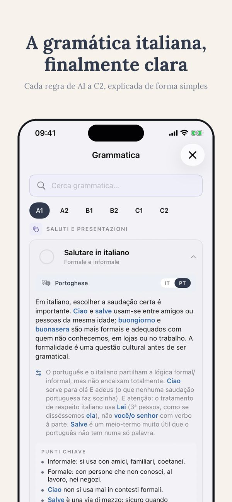
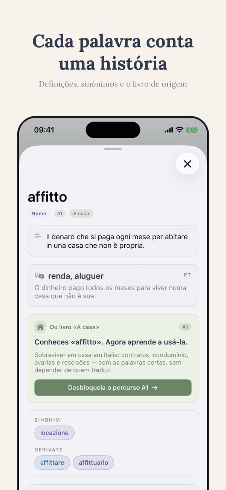
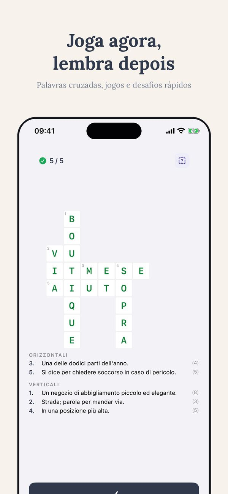

Para quem vive em Itália
Exame A2 de italiano para a residência de longa duração
Se reside legalmente em Itália há pelo menos cinco anos e quer pedir a autorização UE de longa duração, tem de provar que conhece o italiano ao nível A2. Aqui está o que é exatamente o exame e como preparar-se.
Quando é preciso o exame
O exame é obrigatório apenas para obter a autorização UE para residentes de longa duração (a antiga carta di soggiorno). Não é exigido para a emissão nem para a renovação da autorização de residência normal.
O pedido exige também: cinco anos de residência regular em Itália, rendimento suficiente e habitação adequada.
Como funciona
O pedido é feito por via eletrónica à prefettura da sua zona de residência. A prefettura convoca-o no prazo de sessenta dias, indicando dia, hora e local.
O exame tem cinco provas: duas de compreensão oral, duas de compreensão escrita e uma de interação escrita. Cem pontos no total, aprovação a partir de oitenta.
Realiza-se nos CPIA, os centros públicos de educação de adultos, e é gratuito.
Quando não é necessário
Não tem de fazer o exame se já possuir um certificado de italiano reconhecido de nível A2 ou superior — CILS, CELI, PLIDA, CERT.IT ou Ce.Co.L — ou um diploma emitido por um estabelecimento de ensino italiano.
O que significa A2 na prática
No nível A2 consegue: apresentar-se e falar da sua família e do seu trabalho, perceber um aviso simples ou uma carta curta, preencher um formulário, marcar uma consulta, desenrascar-se numa loja ou no médico.
Não lhe é pedido discutir temas abstratos nem dominar o conjuntivo. É-lhe pedido funcionar no dia a dia.
Um aviso importante
O nível A2 comprovado por este exame só é válido para a autorização de longa duração. Não serve para trabalhar nem para estudar.
Para a cidadania italiana é exigido o nível B1, e o procedimento é diferente: o certificado tem de ser apresentado logo no momento do pedido.
Como preparar-se
Conte o tempo a partir da convocatória, não do dia em que decide começar: entre o pedido e o exame passam normalmente cerca de dois meses.
Comece pela audição — quatro das cinco provas são de compreensão. Leia textos curtos todos os dias e treine o preenchimento de formulários.
A aplicação Ti explica gramática e vocabulário em português, não apenas em inglês. Para quem vive e trabalha em Itália isso poupa uma ponte inteira.
Ti






Metade do percurso A1 está aberta, sem registo
Começa pelo A1 ↗︎Mais de Thuis Italiaans
Livros graduados por nível · Aulas de italiano online · Mais de 700 exercícios grátis